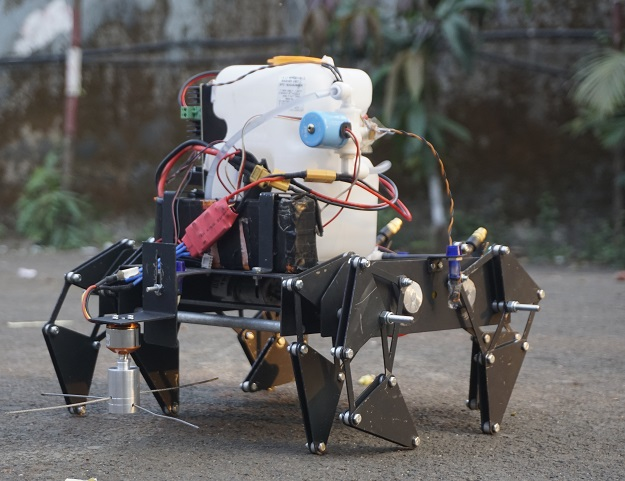
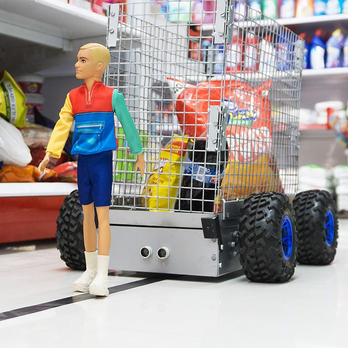
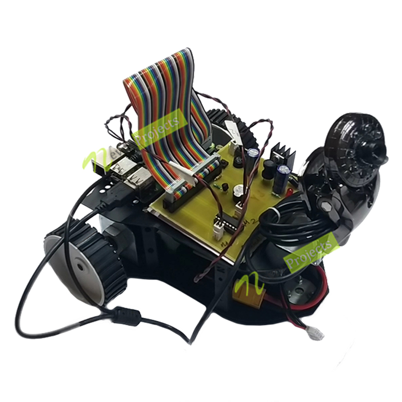

| Name | Image | Description |
|---|---|---|
| Pesticide Sprayer Spide Robot with Grass Cutter |  |
The remote control aspect is critical to this solution, as it provides farmers with the ability to oversee and direct the robot’s movements in real-time. The 5-meter range allows operators to maintain a safe distance from potential pesticide exposure while still ensuring close supervision. The integration of sensors, cameras, and advanced algorithms enables the robot to identify crops and distinguish them from weeds, ensuring accurate pesticide application only where necessary. This not only optimizes pesticide usage but also reduces the environmental impact associated with excessive chemical dispersal. |
| Smart Shopping Trolley that Follows the Customer |  |
Smart human following shopping trolleys are designed to follow customers automatically, eliminating the need for them to push the cart manually. This technology offers convenience and ease for shoppers, allowing them to focus on shopping and enjoying their experience. The smart trolley is equipped with various sensors and cameras that can detect the customer’s location and follow them while they shop. One of the primary advantages of smart human following shopping trolleys is that they provide a more personalized shopping experience. Shoppers can easily navigate through the store without the need to push their trolley or worry about losing it. They can focus on the products they want to purchase and spend more time browsing without any hassle. |
| Object Tracker & Follower Robot Using Raspberry Pi |  |
Smart human following shopping trolleys are designed to follow customers automatically, eliminating the need for them to push the cart manually. This technology offers convenience and ease for shoppers, allowing them to focus on shopping and enjoying their experience. The smart trolley is equipped with various sensors and cameras that can detect the customer’s location and follow them while they shop. One of the primary advantages of smart human following shopping trolleys is that they provide a more personalized shopping experience. Shoppers can easily navigate through the store without the need to push their trolley or worry about losing it. They can focus on the products they want to purchase and spend more time browsing without any hassle. |